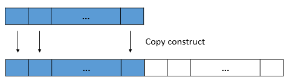
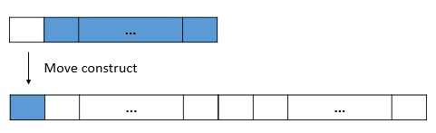

When to Use noexcept And When to Not
Table of Contents
In C++ 11, a new keyword noexcept is introduced. Being a replacement of deprecated throw(), what is noexcept good for?
When should it be used and when should be avoided?
1 Intro to noexcept
noexcept is a function specifier. It is used to specify a function whether will throw exception or not.
It can be used as following:
void foo() noexcept; // a function specified as will never throw void foo2() noexcept(true); // same as foo void bar(); // a function might throw exception void bar2() noexcept(false); // same as bar
However, same as throw(), noexcept implies no compile-time check.
What if a function specified with noexcept throws an exception?
Unlike throw(), if an exception is thrown out of a noexcept function,
std::unexpected will not be called. Stack unwinding, during which destructor of stack allocated objects will be called,
is not guaranteed. But std::terminated will be called immediately.
noexcept is to provide information for compiler, allow it to generate optimized code against non-throwing functions.
- Great, "noexcept" means more optimized code. Let's use it as much as we can! - DON'T!
Exception-free code is one of the hardest thing to do right.
If you don't believe me, check out this question 1 on StackOverflow.
Even though the function is simple at first,
marking it noexcept will make it difficult to change in the future, or break existing client code if changed.
Let's see an interesting example.
## noexcept and std::vector
As you might have known, a vector has its capacity.
If it's full when push_back, it will allocate a bigger memory,
copy (or move if C++ 11) all existing elements to the new trunk,
then add the new element to the back.

Figure 1: Use copy constructor to expand a vector
But what if an exception is thrown out while allocating memory, or copying the element to the new trunk?
- If exception is thrown during allocating memory, the vector is in its original state. It's fine just re-throw the exception and let user handle it.
If exception is thrown during copy existing elements, all copied elements will be destroyed by calling destructor, allocated trunk will be freed, and exception thrown out to be handle by user code. 2
After destroy everything, the vector is back to the original state. Now it's safe to throw exception to let user handle it, without leaking any resource.
2 noexcept and move
Come to the era of C++ 11, we have a powerful weapon called move.
It allows us to steal resources from unused objects.
std::vector will use move when it needs to increase(or decrease) the capacity,
as long as the move operation is noexcept.
Suppose an exception throws during the move, the previous trunk is not the same as before move happens:
resources are stolen, leaving the vector in an broken state.
User cannot handle the exception because everything is in an nondeterministic state.

Figure 2: Use move constructor to expand a vector
That's why std::vector relies on move constructor to be noexcept.
This is a demostration how client code would rely on noexcept as an interface specification.
If later the noexcept requirement is not met, any code previously depends on it will be broken.
3 noexcept is an interface specification
It's easy to add noexcept in the begining,
but it will be difficult to modify the interface, or remove noexcept.
Just like other interface specifications, the principle of when and how to use noexcept should be carefully considered, but in general:
When define an interface, parameter type should be as specific as possible, and return type should be as specific as possible, so future modification can be made easily. The =noexcept= specification should also be as *generic* as possible, i.e. =noexcept(false)=.
4 References
In the An Effective C++11/14 Sampler, Scott Meyers talked about noexcept with above example. It's worth watching.
The "why not noexcept" question on StackOverflow.
Footnotes:
What if an exception is thrown during destroying copied elements? std::terminated will be called to terminate the program.